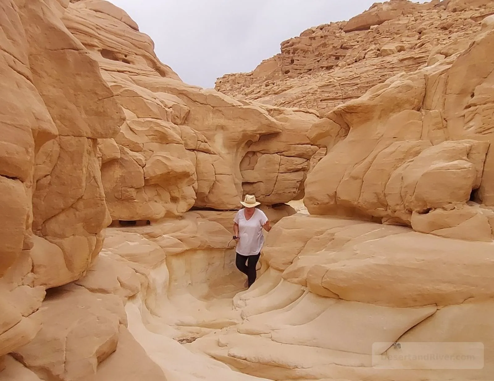
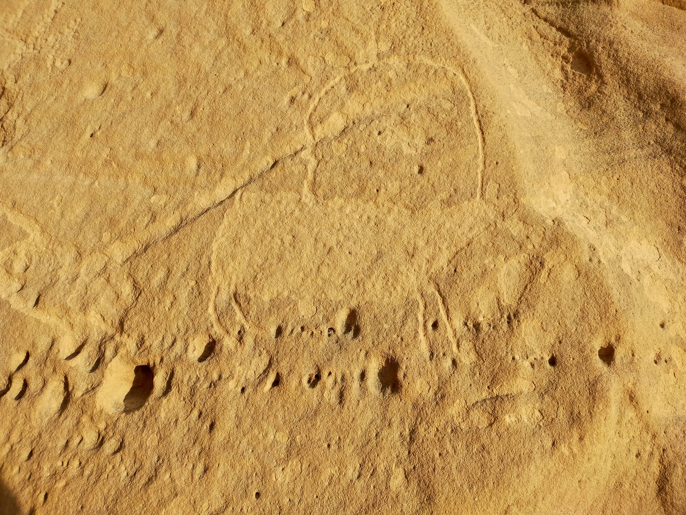
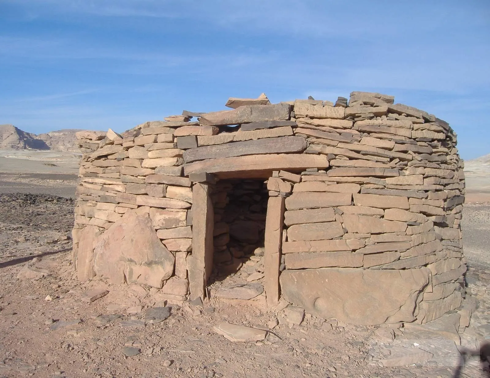

Desert & River
Viaja más a fondo por el Sinaí con viajes a medida, cultura local y conexiones auténticas.
La mayoría de las excursiones al desierto desde Dahab van corriendo de una parada para fotos a otra. Esta no. Nuestra excursión de un día a Arada es un safari completo por el desierto de arenisca del Sinaí del Sur: inscripciones rupestres, una caminata de verdad por un cañón, fósiles, tumbas de 5.000 años y una duna de arena para terminar. La guían juntos Joseph y Annet, con más de 30 años guiando en el Sinaí y casi 20 años viviendo en Dahab entre los dos.

Salimos de Dahab a las 8:00 y el safari en jeep se adentra hacia Wadi Arada. La primera parada es la Roca de las Inscripciones de Arada: antiguos grabados de camellos, cazadores y la vida diaria beduina rayados en la arenisca. Desde allí caminamos y trepamos por el Cañón Doble, con un descenso empinado ayudado por cuerda, y pasamos junto a un tramo de arrecife de coral fosilizado donde todavía se ven conchas fósiles en la roca.

Mientras estás en el cañón, nuestro cocinero prepara un almuerzo fresco allí mismo: sin restaurante, sin menú. Después del almuerzo, un trayecto corto nos lleva a los Nawamis: tumbas circulares de piedra construidas hace unos 5.000 años, más antiguas que las pirámides y entre las construcciones con techo más antiguas que siguen en pie en el mundo.

Es viajar despacio en el sentido más auténtico. Un valle, un día, visto como se merece.
Seguimos hasta la Montaña Cabeza de Dragón (Gebel Makhroum) para ver la tierra de arenisca y los campos de dunas, y terminamos en la duna de Hedoda: súbela, bájala en sandboard o simplemente siéntate arriba a ver cómo cambia la luz antes de volver a Dahab.
No incluido: propinas y gastos personales.
$75 por persona excursión compartida
$300 por coche — excursión privada
Si un día te parece poco, nuestra excursión de dos días con noche en el desierto hace esta misma ruta con calma, con una noche en el desierto entre medias.
Ver la excursión con noche en el desiertoEs un viaje en grupo pequeño y a ritmo tranquilo: escríbenos y te ayudamos a elegir la fecha.
Viaja más a fondo por el Sinaí con viajes a medida, cultura local y conexiones auténticas.